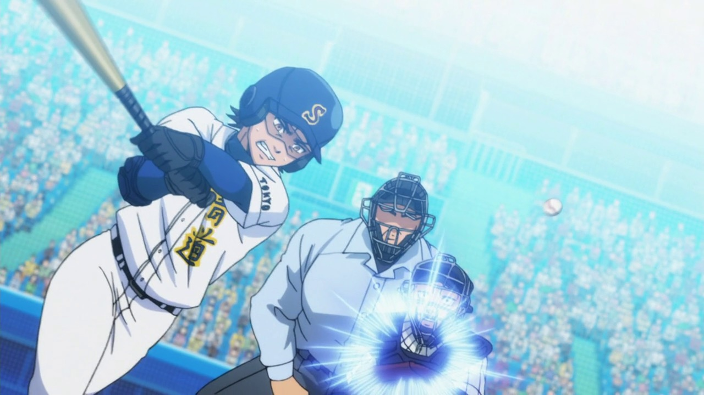
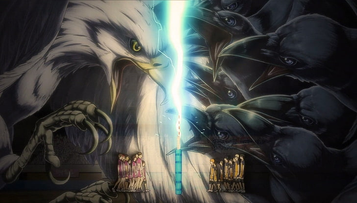

Melihat anime genre olahraga dari sudut pandang yang menarik.
Olahraga adalah bentuk aktivitas fisik yang biasanya bersifat kompetitif dengan tujuan untuk meningkatkan kemampuan dan keterampilan fisik seseorang seraya memberikan hiburan bagi pemain ataupun penonton.
Seirin rematch melawan touku ihou vs sendou anime bertema olah raga masih tidak terlalu banyak di tonton oleh penikmat anime di indonesia, media yang berada di antara keambiguan dimana para pecinta anime ingin menonton jokes yang ada pada anime tersebut dan para pecinta anime jarang ingin menonton anime sport karna menurut mereka terlihat "aneh". Tapi belakangan ini mulai banyak bermunculan anime sport sampai menembus jajaran top di myanimelist. Daimana genre ini pasti isinya hanya turnamen arc.
Keluar dari akal logika, melebihi hukum alam, teknik spesial, formasi yang berbeda, meneriakan gerapan spesial sebelum melakukan gerakan tersebut, karena semua efek yang digunakan dalam anime olahraga tersebut lah yang membuat semua gerakan semua teknik membuatnya menjadi unik dan menarik. Bayangkan gerakan akashi di dalam dunia nyata, dia hanya melakukan basic drible dan semua orang terjatuh hanya karna dia memiliki MATA EMPEROR. Tapi itulah yang membuat anime sport menjadi sangat menarik dan membuat fans anime sampai fans olahraga menonton anime Sports. Hiperbola yang dibuat oleh para animator anime sport dalam menyajikan gerakan gerakan yang ada di olahraga dunia nyata membuat gerakan tersebut menjadi 100x lebih menarik dari dunia nyata, semua efek efek angin semua teriakan yang karakter lakukan saat melakukan gerakan tersebut membuat metafora.
Metafora-metafora yang digunakan didalam anime contohnya seperti dalam anime EyeShiled21 dimana gerakan kobayaka sena memiliki kecepatan yang melebihi kecepatan cahaya, metafora yang menggunakan hewan, atau hal hal lainnya yang ada di alam semesta ini sebagai penggambaran di dalam anime olahraga penggambaran metafora dari banyak hal tersebut menjadikan jembatan untuk para penonton menjadikannya gambaran dimana penonton menjadi lebih 'akrab' dengan semua hal yang terjadi didalam anime tersebut. Dan yang menambah imersive dari anime sport tersebut tentu saja dengan adanya music yang ada pada anime tersebut dimana kita para penonton dari awal disuguhkan dengan music yang menggambarkan anime tersebut dari semangat muda dalam menggapai impian, kemuraman dari kekalahan, ketegangan yang sedang terjai didalam turnamen dan lainnya.
Seperti penjelasan dari apa itu "Sports", Memasak dalam anime Shokugeki no Souma juga bisa disebut olahraga dimana anime tersebut juga menggunakan sistem turnamen arc dimana semua oarang dalam anime tersebut berlomba lomba menjadi nomor satu di akademi memasak tersebut, banyak anime anime yang tidak secara langsung dianggap anime tapi menggunakan formula dari anime sport itu sendiri.
Anime Sports memiliki banyak hal yang dapat di apresiasi, seni dari anime sport itu sendiri memiliki keunikan sendiri yang tidak kita dapatkan di genre anime lain, bagi para pembaca yang masih berfikir untuk memulai menonton genre sport ini saya menyarankan untuk memulainya dari yang ringan seperti pada anime Haikyuu, dan Hanebado, jika para penikmat cogan cogan dan lebih ke arah slice of life bisa memulai dengan anime free, dan untuk penikmat genre fantasi bisa memulai dengan anime kuroko no basuke yang memiliki banyak gerakan gerakan di luar kemampuan fisik manusia itu sendiri.